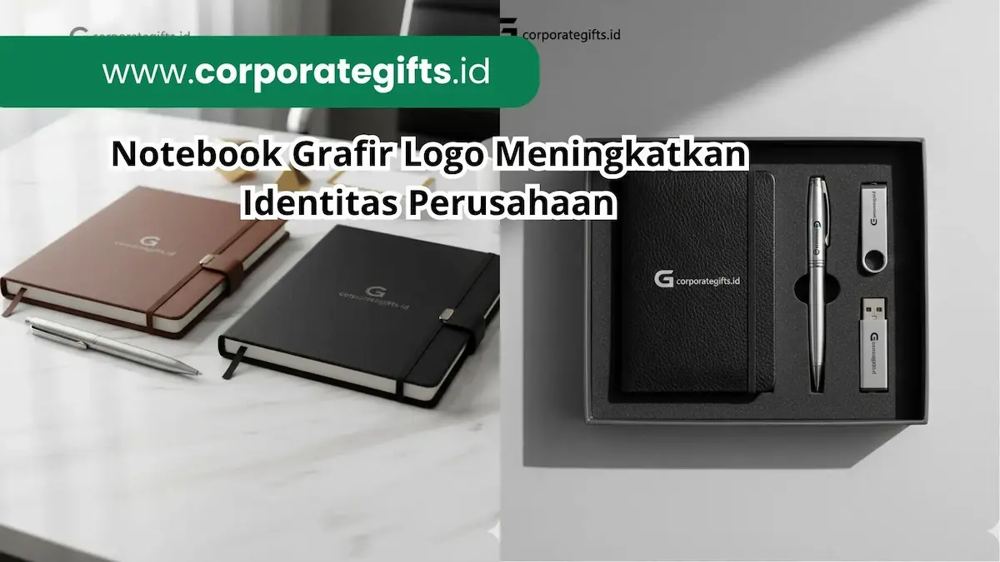

Corporate Gifts ID - Notebook grafir logo adalah buku catatan eksklusif yang logonya diukir permanen menggunakan mesin laser presisi pada sampul kulit PU, hardcover, atau kayu. Hasil ukiran laser tidak mudah pudar maupun terkelupas seperti cetakan sablon konvensional, menjadikannya pilihan cenderamata utama untuk memperkuat identitas brand di mata klien, mitra bisnis, hingga jajaran staf internal.
Poin Kunci Keunggulan Notebook Grafir Logo:
- Ukiran Permanen Anti-Luntur: Sinar laser mengikis lapisan permukaan secara mikro sehingga logo tidak akan terkelupas meski tergesek setiap hari.
- Sentuhan Eksklusif dan Berkelas: Memberikan tekstur ukir tipis yang elegan dan profesional tanpa kesan mencolok atau murahan.
- Fleksibilitas Desain Tinggi: Tidak memerlukan klise cetak khusus, sangat fleksibel untuk penambahan nama penerima perorangan.
- Media Branding Aktif: Buku agenda kerja menemani rutinitas rapat penerima sehingga eksposur merek berlangsung sepanjang tahun.
- Kompatibilitas Material Premium: Hasil terbaik diraih pada bahan kulit sintetis PU, hardcover karton tebal, dan panel kayu alami.
Dalam lanskap promosi korporat modern, cenderamata bukan lagi sekadar pelengkap seremonial, melainkan media komunikasi taktis yang beroperasi langsung di meja kerja pengambil keputusan. Sentuhan visual yang berkelas pada souvenir kantor mencerminkan tingginya penghargaan instansi terhadap profesionalisme kerja.
Apa Itu Grafir Logo pada Notebook?
Grafir logo merupakan proses penandaan permanen menggunakan pancaran sinar laser berintensitas tinggi. Laser mengikis lapisan luar material sampul buku agenda dengan tingkat ketelitian hingga pecahan milimeter, membentuk siluet tipografi dan simbol identitas visual perusahaan.
Karakteristik khas dari grafir laser adalah warnanya yang monokromatik, mengikuti pigmen lapisan bawah material yang terpapar. Efek kontras natural yang tercipta menghadirkan estetika minimalis modern yang sangat diminati oleh kalangan eksekutif.
Kelebihan Grafir Dibandingkan Sablon Biasa
Banyak instansi masih terjebak pada metode sablon manual demi menekan anggaran sesaat. Padahal untuk jangka panjang, grafir laser menawarkan keunggulan tak tertandingi:
- Durabilitas Seumur Hidup: Tinta sablon rentan retak saat buku sering ditekuk atau dimasukkan ke dalam ransel. Sebaliknya, ukiran grafir menyatu dengan badan material sampul sehingga awet selamanya.
- Tampilan Bertekstur Mewah: Saat disentuh dengan jari, ukiran laser memberikan sensasi kedalaman (depth effect) yang memancarkan cita rasa kerajinan presisi.
- Efisiensi Personalisasi Nama: Anda dapat mengukir nama masing-masing pejabat atau tamu VIP pada tiap buku tanpa perlu membayar biaya matras tambahan seperti pada teknik deboss tradisional.
Jenis Notebook yang Cocok untuk Grafir Logo
Pemilihan bahan dasar sampul sangat menentukan kontras dan ketajaman hasil grafir laser. Tiga kategori sampul berikut merupakan opsi yang paling direkomendasikan:
1. Notebook Kulit PU Premium
Buku catatan bersampul kulit sintetis poliuretan (PU Leather) adalah primadona pengadaan korporat. Saat terkena paparan sinar laser, lapisan luar akan memperlihatkan rona gelap atau terang yang sangat tegas, menghadirkan nuansa eksklusif yang pantas untuk souvenir custom VIP.
2. Notebook Spiral Custom Hardcover
Bagi kebutuhan acara massal seperti lokakarya atau konferensi, notebook jilid spiral dengan sampul karton keras tebal tetap mampu memancarkan wibawa profesional berkat ukiran laser yang rapi di sudut sampul depan.
3. Notebook Kayu Alami & Bambu
Perusahaan yang mengusung pilar keberlanjutan (ESG) dapat memilih sampul kayu solid tipis atau serat bambu alami. Tekstur serat kayu yang berpadu dengan efek bakar laser menciptakan souvenir bernuansa ramah lingkungan yang sangat otentik.

Varian warna dan model buku catatan kulit premium yang siap dikustomisasi dengan ukiran laser nama dan logo.
Tabel Perbandingan Material Sampul Notebook Grafir
Berikut evaluasi komparasi karakteristik material sampul notebook yang kompatibel dengan mesin grafir laser:
| Material Sampul | Karakter Hasil Grafir | Daya Tahan Fisik | Rekomendasi Peruntukan |
|---|---|---|---|
| Kulit PU (Polyurethane) | Kontras tajam, tekstur lembut mewah, warna ukir natural | Sangat tinggi, tahan air, lentur dan tidak pecah | Gift set eksekutif, kado pimpinan, cinderamata mitra prioritas |
| Hardcover Karton Tebal | Rapi, garis presisi, permukaan datar bertekstur matte | Tinggi, melindungi isi kertas dari lipatan dan benturan | Paket seminar kit, onboarding karyawan baru, rapat kerja |
| Kayu Solid / Bambu | Efek bakar natural, aroma kayu khas, nuansa estetik unik | Sangat kokoh dan kaku, awet untuk pajangan jangka panjang | Program CSR ramah lingkungan, cinderamata bertema ESG |
Contoh Penggunaan Notebook Grafir Logo di Perusahaan
Pemanfaatan notebook grafir laser telah terbukti sukses di berbagai sektor bisnis terkemuka:
- Sektor Teknologi & Telekomunikasi: Menyediakan buku catatan kulit PU grafir laser pada konferensi pers peluncuran produk baru guna memastikan para jurnalis dan analis membawa pulang media catatan yang representatif.
- Perbankan & Lembaga Finansial: Menghadirkan paket binder kulit eksekutif berukir nama nasabah prioritas untuk mempererat relasi kekeluargaan nasabah segmen wealth management.
- Instansi Pendidikan & Riset: Menjadikan agenda grafir kayu sebagai cenderamata wisuda atau kunjungan dinas antar-universitas.
Tips Memilih Vendor Grafir Logo Notebook Terpercaya
Agar hasil ukiran buku catatan kantor Anda sempurna tanpa cacat produksi, perhatikan panduan seleksi workshop berikut:
- Periksa Portofolio Fisik: Pastikan penyedia jasa memiliki rekam jejak produksi nyata pada bahan kulit dan hardcover sejenis.
- Ajukan Uji Sampel (Proofing): Mintalah sampel satu unit untuk memeriksa kedalaman grafir dan kebersihan pinggiran ukiran laser sebelum produksi massal dimulai.
- Sediakan File Format Vektor: Kirimkan master logo dalam format kurva vektor (.AI, .EPS, atau .SVG) agar mesin laser membaca garis dengan ketajaman absolut tanpa patahan piksel.
- Jaminan Kepatuhan Timeline: Pastikan vendor memiliki kapasitas mesin laser yang memadai untuk memenuhi batas waktu rundown acara Anda.
Kesimpulan
Notebook grafir logo merupakan instrumen branding yang memadukan keanggunan seni kerajinan dengan efisiensi teknologi modern. Dibandingkan teknik sablon biasa, grafir laser memberikan jaminan keawetan permanen, sentuhan mewah, dan penguatan citra institusi yang konsisten di meja kerja para pemangku kepentingan.
Jelajahi beragam pilihan model buku catatan kerja terbaik kami di katalog Corporate Gifts atau diskusikan spesifikasi custom logo instansi Anda bersama tim kurator kami.
FAQ Seputar Grafir Logo Notebook

Ditulis oleh: Arinda Zakia
Senior Corporate Gifting SpecialistSpesialis kurasi souvenir kantor eksekutif, teknik grafir laser presisi, gift set korporat, dan pengadaan cenderamata kemitraan B2B di CorporateGifts.ID.
Lihat Profil Lengkap & Panduan Lainnya